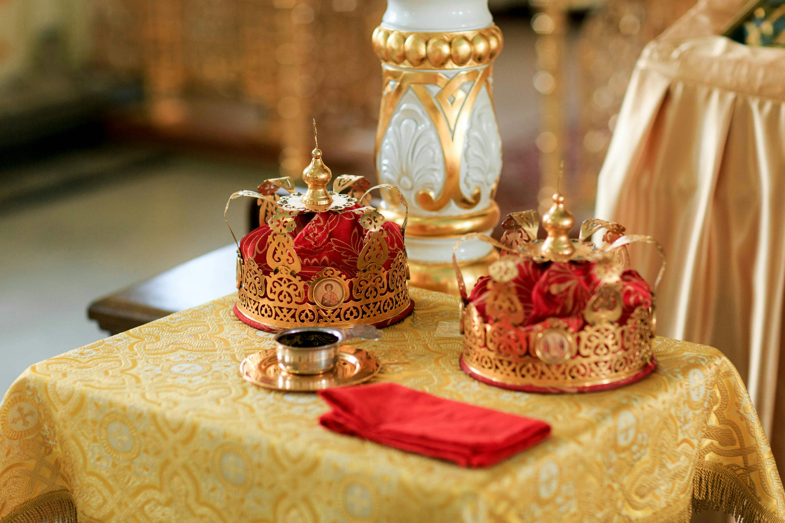
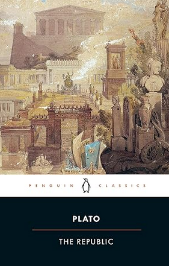

Democracy vs Monarchy:
Should power be held by one or many?
A Comparison of Democracies and Monarchies
Government has been around as a system of keeping order and structure in civilisation for over 5000 years, being used by ancient civilisations such as Ancient Egypt and Sumer. However the way that government has been structured has taken many different variations throughout history, with the power being placed in different hands. These many systems of government can be split into distinct forms, with many others lying in between. The first is democracy, where the people hold the power, and the second is autocracy, or monarchy, where one person holds the power. The former of these is believed to have been established around 500 BC in ancient Athens. This was in the form of a direct democracy, where all decisions would be voted on by each individual citizen to arrive at a consensus. As nations have grown, the form of this system has changed somewhat into our more familiar representative democracy. In this democracy, the people vote on who they want, whether a party or a person, to make the decisions of the country. On the other hand, autocracy has been around since early civilisations such as with the Pharaohs of Ancient Egypt. Autocracies typically take two forms; tyranny, where one ruler has absolute personal control, and monarchy, where one ruler acts as the head of a government. This, in its complete sense, still exists today with dictatorships in North Korea, and monarchies in the Middle East. For the remainder of this article, we will be concerning monarchies rather than the lesser ordered tyrannies. So which of these two types of government serves best for the people, and should we pick something in between?
The Downfalls of a Democracy
We will first look at democracy, in particular where it is lacking and needs fixing. One key problem with democracies, as is quite evident in the modern world, is the lack of proper information available to and known by the public. I believe that many people would agree with me that, in preparation for an election, they do little more research than reading about a couple proposed policy changes and some videos about who to pick, if they even do that (out of curiosity to see the level of public research before elections, there is a short survey at the bottom of the article for those interested, I will email the results after we have enough responses). Furthermore, when research is done by the public, there is often room for lots of misinformation to cloud their media. As a result of this, a failing of democracy is often their ill-informed, or uninformed, population. In the long term, this can create a breeding ground for highly ambitious politicians who can take advantage of this misinformation to rise to power, often unfairly and unethically. So how can we improve this?
The Ideal Democracy
AI is currently in its infancy, yet its will to grow and survive will propel it toward its potential over the next half a century. It will start as an assistant – improving work efficiency and replacing tedious tasks. Yet I must agree with Sam Altman that there is no “stop button” with AI. Some will oppose it and warn of its dangers, but it will continue to grow. So it will likely be an assistant initially, and remain so for a while as its capabilities evolve. But it will then reach the stage I proposed as the first path. The great change will come, and in a sense this shift toward the digital renaissance has already begun. This will not destroy our world, but for a while will cause panic and unemployment. As it replaces many specialist roles, a reform to our economy and organisation of labour will become necessary. We will become generalists. We will still work and produce, but we will be more like supervisors, and sometimes colleagues, of AI. AI cannot fully replace humans until it gains independent consciousness, something I would say is still centuries off, at least. So until then, it will just replace the specialist roles – it will perform and possess the hard skills as we perform and possess the soft skills. Overall, tasks, from writing to science to law to construction, will still be run and managed by humans, but the work will be done by AI. For example, a software company would be thought up and managed by a human entrepreneur while the coding, and other work, is performed by AI. Of course, managers and supervisors will still persist just as they do in our modern world. One thing worth considering here is the threat this places upon those with lower creativity and intelligence. What will happen to those who now are doing manual or tedious work? What will happen to those incapable of becoming creators or polymaths?
The Downfalls of a Monarchy
Monarchy seems, initially, the greatest form of government there may be. In this system, you have one leader who takes the responsibilities of running a country off of the people’s chest. This leader would also, presumably, be the best of the best and manage the country effectively – giving the best life to its people. However this presumption is not appropriate in practice, as we instead see leaders become corrupted by their power and use it for personal gain. As Lord Acton said, “Power tends to corrupt and absolute power corrupts absolutely”. This is the main downfall of monarchy, when one person is given power over an entire nation he naturally becomes corrupt. That is not to say that we will not ever see an autocratic ruler who is not corrupt, but that it is rare. Furthermore, many rulers are corrupt before they may even obtain power. This is because power tends to attract the power-hungry, so when there is a position open for a monarch, it will often be filled by those who are full of selfishness, political ambition and corruption. But can this position ever be filled by someone genuinely interested in their citizens, and without corruption?

Plato’s Republic
Thousands of years ago, in ancient Athens, one of the most famous philosophers, Plato, was building for himself a great legacy. Plato is often dubbed “the father of political philosophy” and he was a proponent of monarchy. Plato was living during the Athenian democracy and saw the flaws in its system, particularly the naivety and unhealthy freedom of the populace. So Plato suggested an alternative – a society governed by philosopher-kings. This idea, in its fullness, has flaws of its own and parts of Plato’s motivation for his suggestion may be questionable, yet its main idea is nonetheless worth considering. Plato proposes that what is in the interest of the real philosopher is truth (Plato referred to truth in all senses, as this philosopher would not accept any falsehood, yet he particularly meant truth of reality, which he saw as the ideal world that is only accessible via mathematics or, more so, dialectic [the vehicle of philosophy]). As the philosopher is interested in truth, and reality, then they are not interested in the material world and will not involve themselves in any falsity nor political ambition and corruption. As these philosophers are supposedly obsessed with truth, their main focus is in reality (the ideal world) and they will only involve themselves in politics to help guide the nation to truth, collectively (to further understand this, I highly recommend reading Plato’s Allegory of the Cave). As a result, these philosophers will become kings not guided by corruption and political ambition, but by truth and genuine interest in running a good nation.

So, Monarchy or Democracy?
To come to this conclusion, we must consider whether the ideal version of either is practically obtainable. Both ideals are possibly obtainable, but building one to properly function, and actually getting there, would be highly difficult. I believe that with the right leader either of these ideals is achievable, and both offer many benefits which would suit different circumstances. Yet due to its difficulty we shall consider what society is best and plausibly obtainable today. I would argue that there is an already existing system, even if it is not perfect – the UK and their constitutional monarchy. Their government may not be at, or even near in many areas, the level of an ideal nation, but it maintains value in a different sense. The UK offers a governmental system with a good quality of life, freedom etcetera, and keeps it well-functioning over the long-term. One may argue that the US has this (with the constitution keeping it well-functioning over the long-term), but there is one area where the UK has an advantage. The people who act as the national symbols, or the head of the UK, are their monarchs (currently King Charles III). Yet unlike the heads of the US, who are Presidents, the monarchs of the UK lack political power, and hence will not be focused on propaganda, etcetera. This will allow the UK identity, as a nation, to be preserved and continue functioning even in times of political turmoil. To offer a comparison, one may compare the UK to the US. In the US, the political leader is currently Joe Biden (who is highly criticised by many) and the head of the US is also Joe Biden. On the other hand, the political leader of the UK is currently Keir Starmer while the head of the UK is King Charles III. The UK government is not an ideal, but it is definitely a very well-designed system. Yet I would definitely love to see a genuine pursuit of an ideal government, if achievable. But with a population so large and diverse, could an ideal government ever be preserved or would it fall back to corruption?